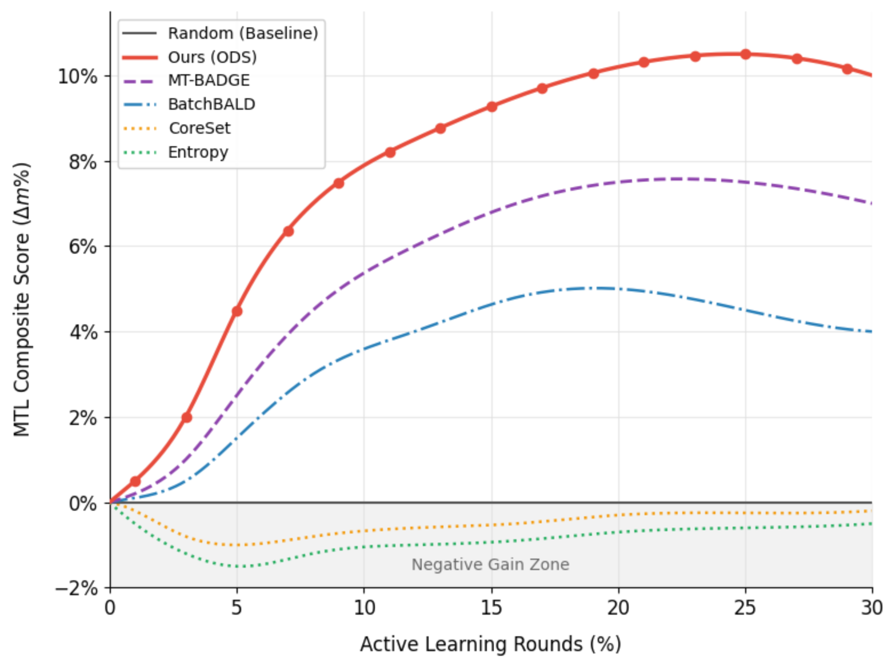
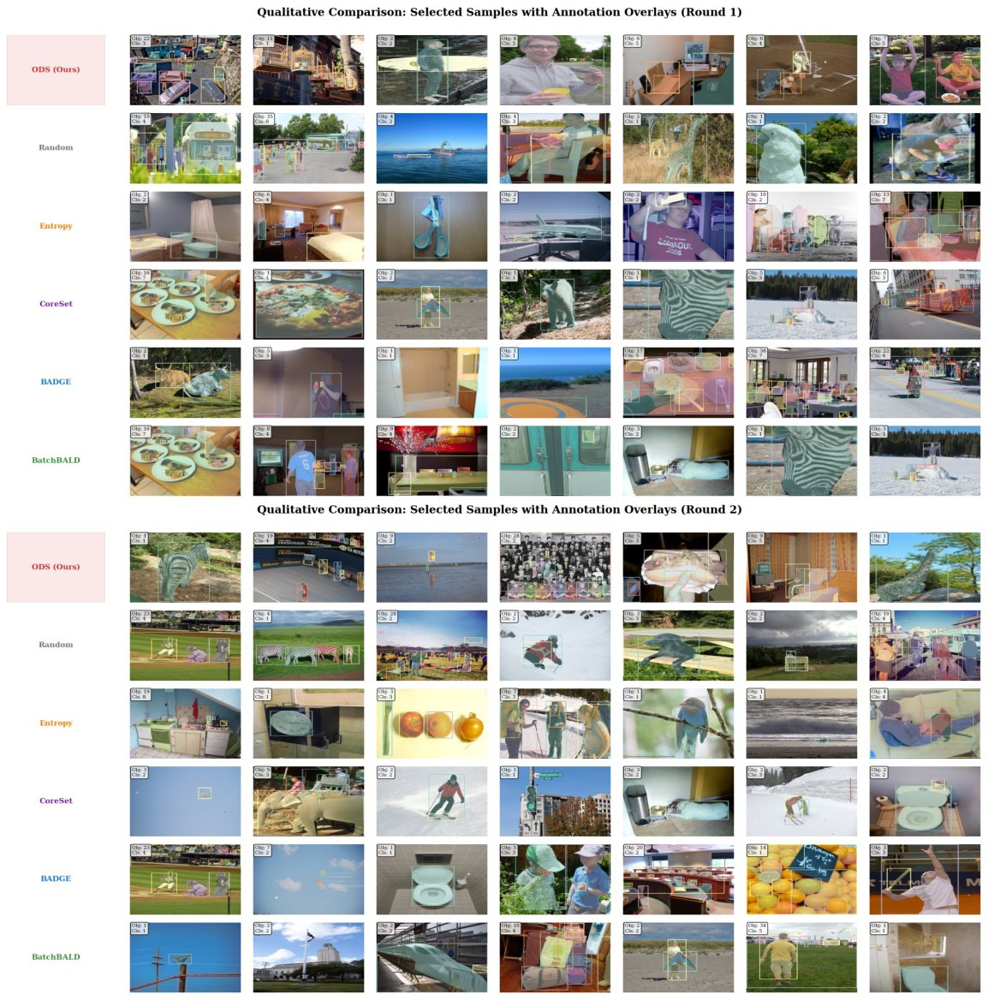
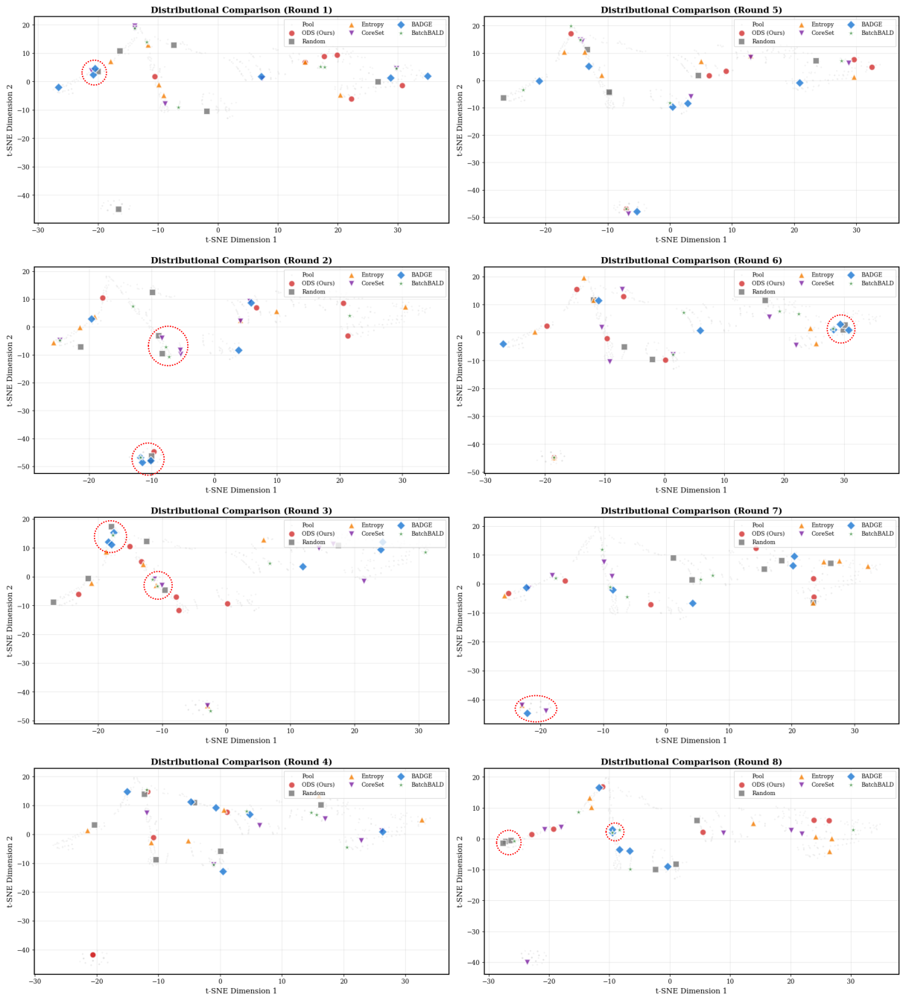

Multi-task active learning usually ranks samples by a weighted sum of uncertainty, diversity and gradient conflict. We take that sum apart. Gradient conflict leaves the acquisition score and is handled by the optimizer, and the remaining objectives become two ordered stages: filter by informativeness, then maximize coverage among the survivors.
Where does the weighted sum spend the budget?
Synthetic 2-D illustration of the diversity-dilution effect, not experimental data. The weighted-sum rule z-scores informativeness and distance to the labeled set and adds them with equal weight; ODS keeps the top m·B (m = 3) by informativeness and then runs k-Center Greedy on those.
From combination to deconstruction
Existing multi-task active learning (MTL-AL) methods predominantly rely on the linear scalarization of heterogeneous objectives, such as uncertainty, diversity, and gradient conflict. We argue that this entangled formulation is fundamentally limited, as linear combination fails to capture Pareto-optimal trade-offs under conflicting objectives. To address this limitation, we propose a paradigm shift from combination to deconstruction and introduce a principled framework that rethinks MTL-AL along three orthogonal dimensions.
First, we identify the Conflict Paradox: although the optimization literature treats gradient conflict as interference to be suppressed, carrying that intuition into the acquisition score is counterproductive. Penalizing conflict when ranking candidates is measurably worse than not scoring it at all. We therefore decouple the two concerns: the acquisition function does not score conflict, and the interference it causes is resolved separately by gradient surgery during training. Second, we introduce Orthogonal Decomposition, separating the acquisition objective into two distinct axes: Informativeness and Exploration. This two-stage process, consisting of informativeness filtering followed by coverage maximization, prevents “diversity dilution” by excluding uninformative outliers before enforcing diversity. Third, we propose Cross-Task Mutual Information (CTMI), a covariance-based statistic of cross-task dependency computed from MC-dropout task entropies.
Extensive experiments on COCO, Cityscapes, and NYUv2, including comparisons against recent multi-task active learning and data-selection baselines, demonstrate consistent improvements over state-of-the-art MTL-AL methods, highlighting that structural rethinking of acquisition yields larger gains than incremental heuristic design.
Stop scoring gradient conflict
Penalizing gradient conflict in the acquisition score is measurably worse than not scoring it at all. ODS leaves conflict out of selection and resolves it at training time with PCGrad.
Filter first, then cover
Informativeness and exploration are applied in sequence. Stage 1 keeps the most informative candidates; Stage 2 runs k-Center Greedy only on those, so uninformative outliers cannot dilute the batch.
Cross-Task Mutual Information
A covariance-based statistic of cross-task dependency computed from MC-dropout task entropies. It rewards samples whose task uncertainties vary independently, where one annotation resolves several separate ambiguities. Forward passes only.
Orthogonal Decomposition Selection (ODS)
One active-learning round. The two selection stages run in a fixed order and never share a score.
Unlabeled pool \(\mathcal{U}\)
K MC-dropout passes give per-task entropies for every candidate.
Filter
\(\mathcal{I}(x) = \alpha\,\mathrm{Hardness}(x) + \gamma\,\mathrm{CTMI}(x)\)
Keep the top m × B candidates.
Cover
k-Center Greedy over the Stage-1 candidates only, returning a batch of size B.
Annotate & train
All task labels for the batch. Shared encoder + task heads; PCGrad resolves gradient conflict.
- Hardness
- Per-task predictive uncertainty aggregated over tasks: predictive entropy for classification, the top-K box-entropy sum for detection, and the 90th percentile of per-pixel entropy for segmentation. For regression tasks such as depth, the log-variance of MC-dropout predictions.
- Stage-1 score
- \(\mathcal{I}(x) = \alpha\cdot\mathrm{Hardness}(x) + \gamma\cdot\mathrm{CTMI}(x)\), both terms min–max normalized to [0, 1]. The two are functionals of the same MC-dropout predictive distribution, so their sum acts as a soft conjunction of two screening conditions rather than a trade-off between competing objectives. Rank-sum, z-score sum and product rules give statistically indistinguishable results.
- Training
- The acquisition score contains no conflict term. Whatever gradient conflict the selected batch carries is resolved during optimization by PCGrad.
For each task pair, the absolute correlation of the two entropy sequences across MC-dropout passes, averaged over pairs and inverted. Task uncertainties that rise and fall together point to a single cause, so labeling that sample resolves one ambiguity rather than one per task. Here \(\widetilde{\cdot}\) is min–max normalization over the current pool. CTMI is an empirical statistic; it claims no bound on the true mutual information.
Why it is cross-task. With task-private heads whose dropout masks are independent given the shared representation \(z\), the law of total covariance gives \(\mathrm{Cov}(H_i,H_j)=\mathrm{Cov}_z\big(\mathbb{E}[H_i\mid z],\mathbb{E}[H_j\mid z]\big)\). Every non-zero cross-task covariance is attributable to the shared encoder (Proposition 2). Under an identical Stage 2, adding CTMI to Hardness raises the MTL composite from 0.094 to 0.105.
Why two stages instead of one sum
A weighted sum \(\alpha\mathcal{I} + \beta\mathcal{E}\) draws a diagonal decision boundary. When informativeness and exploration are only weakly related, raising one trades the other away, and uninformative outliers with extreme distance scores take over the batch. On COCO the two axes stay nearly uncorrelated across the whole 50-round trajectory (\(|r| \le 0.18\)), with a persistently negative sign in early and mid rounds: \(\mathcal{I}\) and \(\mathcal{E}\) disagree.
With the exact same per-sample scores, ODS beats linear scalarization by +6.5% on the MTL composite, with the largest gap on segmentation (+6.2 points).
| Round | 1 | 5 | 10 | 20 | 30 | 40 | 49 |
|---|---|---|---|---|---|---|---|
| Pearson r | −0.18 | −0.11 | −0.18 | −0.09 | −0.12 | −0.02 | −0.09 |
| Spearman ρ | −0.15 | −0.07 | −0.17 | −0.07 | −0.09 | +0.00 | −0.07 |
Penalizing conflict in selection hurts. Resolving it in the optimizer helps.
Existing MTL-AL methods penalize gradient conflict, treating it as optimization noise. That biases selection toward the aligned region, where samples follow the model's current trajectory. Once basic features are learned, the samples that reduce the joint loss the most sit in the high-conflict region instead.
For a sample with extreme conflict (\(g_i \approx -k\,g_j\)), the per-sample task Jacobian collapses to an adversarial rank-1 structure and no joint descent direction exists. Projecting the gradients with PCGrad breaks that deadlock and pushes the encoder into directions the dominant trajectory does not cover (Proposition 1, a local, sample-level property).
Decoupling principle. At selection, the acquisition score has no conflict term, so conflicting samples are neither sought out nor filtered away. At optimization, PCGrad resolves the interference without discarding the data.
MTL composite on COCO. (A) vs. (B) is the controlled comparison: same optimizer and pipeline, differing only in whether a conflict penalty enters the score. (C) embraces high-conflict samples without Stage 2; (D) adds the Stage-2 k-Center step, which removes redundancy among candidates that cluster in feature space.
Removing the conflict penalty alone, with nothing else changed, lifts the composite from 0.0589 to 0.0756.
When the cosine is negative, PCGrad projects each task gradient onto the normal plane of the other (dashed) before summing. That is how ODS handles conflict: at training time, after selection.
PCGrad decides how to learn. ODS decides what to learn.
Swapping the optimizer under a fixed acquisition isolates selection from optimization. ODS leads under both optimizers by the same margin over MT-BADGE (+3.0 points), and PCGrad adds a further +2.3 points on top of ODS.
| Best Δm | AdamW | PCGrad |
|---|---|---|
| BatchBALD | +3.1% | +5.0% |
| MT-BADGE | +5.2% | +7.5% |
| ODS (ours) | +8.2% | +10.5% |
ODS leads on all three multi-task benchmarks
MTL composite gain Δm over Random at round 30. Per-task numbers are in the Cityscapes & NYUv2 tab below.

Setup
Lightweight, non-pretrained shared backbone (~2.4M parameters) so that acquisition effects are not masked by pretraining. All methods share the backbone, the optimizer (PCGrad) and the AL protocol: 1% seed set, 1% budget per round, 30 rounds, 3 seeds. Only the acquisition function differs.
\(\Delta m\) is the average relative improvement over Random across tasks, with the sign flipped for lower-is-better metrics such as RMSE, so no single task dominates.
ODS ranks first on every COCO metric, with an average rank of 1.00 across the three tasks and both Δm columns. It is the only method that keeps a gain above 10% at round 30 (+10.0%), against +7.0% for MT-BADGE and +4.0% for BatchBALD.
| Method | Cls Acc | Det mAP | Seg mIoU | Best Δm | Last Δm | Avg rank ↓ |
|---|---|---|---|---|---|---|
| Uncertainty-based | ||||||
| Random | 38.42 ± 0.15 | 25.21 ± 0.20 | 15.10 ± 0.35 | 0.0% | 0.0% | 6.33 |
| Entropy | 38.30 ± 0.12 | 25.13 ± 0.18 | 14.97 ± 0.22 | 0.0% | −0.5% | 9.67 |
| Margin | 38.25 ± 0.15 | 25.16 ± 0.21 | 15.06 ± 0.25 | 0.0% | −0.3% | 8.67 |
| Learning Loss | 38.36 ± 0.15 | 25.18 ± 0.21 | 15.05 ± 0.25 | +4.5% | +3.8% | 7.67 |
| Diversity-based | ||||||
| CoreSet | 38.26 ± 0.20 | 25.14 ± 0.25 | 15.01 ± 0.30 | 0.0% | −0.2% | 9.33 |
| BADGE | 40.09 ± 0.18 | 26.11 ± 0.15 | 15.45 ± 0.20 | +4.1% | +3.4% | 4.00 |
| Hybrid / MTL-aware | ||||||
| BatchBALD | 39.41 ± 0.22 | 25.42 ± 0.19 | 16.40 ± 0.25 | +5.0% | +4.0% | 4.33 |
| MT-BADGE (ext.) | 41.22 ± 0.15 | 25.81 ± 0.12 | 16.83 ± 0.18 | +7.5% | +7.0% | 2.67 |
| PartAL (adapted) | 38.43 ± 0.13 | 20.62 ± 0.11 | 16.34 ± 0.02 | +4.9% | +3.8% | 7.33 |
| Hekimoglu et al. (adapted) | 40.41 ± 0.07 | 21.04 ± 0.16 | 16.95 ± 0.02 | +4.8% | +3.7% | 5.00 |
| ODS (ours) | 42.14 ± 0.10 | 26.52 ± 0.15 | 17.44 ± 0.15 | +10.5% | +10.0% | 1.00 |
Table 2 of the paper. Round 30, mean ± std over seeds 42 / 123 / 456 (α = 1.8, γ = 0.7, K = 20). Hekimoglu et al. additionally trains an acquisition-only autoencoder (~1.04M parameters per round); no other method adds a trainable module.
| Method | Seg mIoU ↑ | Depth RMSE ↓ | Ins mAP ↑ | Δm |
|---|---|---|---|---|
| Random | 65.0 | 0.4150 | 28.0 | 0.0% |
| BatchBALD | 68.2 | 0.4061 | 29.8 | +4.5% |
| MT-BADGE | 69.1 | 0.4041 | 30.7 | +6.2% |
| ODS (ours) | 70.5 | 0.3916 | 31.4 | +8.8% |
| Method | Seg mIoU ↑ | Depth RMSE ↓ | Normal mErr ↓ | Δm |
|---|---|---|---|---|
| Random | 31.0 | 0.750 | 27.0 | 0.0% |
| BatchBALD | 32.5 | 0.726 | 26.1 | +3.8% |
| MT-BADGE | 32.7 | 0.718 | 25.5 | +5.1% |
| ODS (ours) | 33.5 | 0.700 | 24.9 | +7.5% |
Round 30 (Table 10 of the paper). ODS ranks first on every task of both benchmarks.
| Method | s42 | s123 | s456 | Best Δm (%) | Trajectory Δm (%) |
|---|---|---|---|---|---|
| FASS (adapted) | +6.00 | +3.17 | +2.75 | 3.97 ± 1.44 | −0.15 ± 0.12 |
| Cluster-Margin (adapted) | +5.70 | +2.27 | +2.50 | 3.49 ± 1.57 | +0.32 ± 0.10 |
| PPAL (adapted) | +5.98 | +1.68 | +1.11 | 2.92 ± 2.17 | +0.08 ± 0.52 |
| 𝔻²-Pruning (adapted) | +7.12 | +1.55 | +1.64 | 3.44 ± 2.61 | +0.09 ± 0.02 |
| SES (adapted) | +7.42 | +0.91 | +4.12 | 4.15 ± 2.66 | +0.41 ± 0.62 |
| ODS (ours) | +7.35 | +2.34 | +3.52 | 4.41 ± 2.14 | +1.03 ± 0.56 |
Five recent multi-stage selection methods adapted to the multi-task setting, all under one protocol (same backbone and schedule, seeds 42 / 123 / 456, Δm paired per seed against the same-seed Random run; α = 2.5, γ = 0.5, m = 15, K = 15, 31 rounds). Best is the peak Δm over rounds; Trajectory is the mean over all rounds. These numbers are not comparable with the COCO table.
Read as unpaired means, the six methods overlap within one standard deviation. Paired per seed, ODS gives the larger peak gain in 12 of 15 (seed, baseline) comparisons and the larger trajectory gain in 13 of 15, and it is the only method positive on all three seeds over the trajectory.
| Configuration | Hard. | CTMI | k-Center | MTL comp. |
|---|---|---|---|---|
| H only | ✓ | 0.087 | ||
| CTMI only | ✓ | 0.064 | ||
| H + CTMI | ✓ | ✓ | 0.093 | |
| H only + KC | ✓ | ✓ | 0.094 | |
| CTMI only + KC | ✓ | ✓ | 0.082 | |
| Full ODS | ✓ | ✓ | ✓ | 0.105 |
Removing the Stage-2 k-Center step causes the largest single-component drop.
| Combination | Cls | Det | Seg | MTL comp. |
|---|---|---|---|---|
| Linear (1−δ)(αH+γC) + δ·Div | 38.80 | 24.00 | 11.24 | 0.040 |
| ODS (two-stage) | 42.14 | 26.52 | 17.44 | 0.105 |
| Δ | +3.34 | +2.52 | +6.20 | +0.065 |
| (α, γ) | (0,1) | (.5,1) | (1,0) | (1,.5) | (1,1) | (1,2) | (2,1) |
|---|---|---|---|---|---|---|---|
| MTL comp. | 0.082 | 0.099 | 0.094 | 0.102 | 0.105 | 0.103 | 0.104 |
| m | 2 | 3 | 5 | 10 |
|---|---|---|---|---|
| Score | 0.1032 | 0.1045 | 0.1051 | 0.1048 |
| K | 5 | 10 | 20 | 50 |
|---|---|---|---|---|
| Score | 0.1041 | 0.1049 | 0.1044 | 0.1046 |
| Time (s) | 45 | 82 | 158 | 390 |
No setting within a 4× range of either weight loses more than 1.5% relative MTL composite; drops appear only when a component is removed (α = 0 or γ = 0).
| Method | Cls Acc ↑ | Det Acc ↑ | Seg Dice ↑ | Seg mIoU ↑ |
|---|---|---|---|---|
| Random | 0.505 ± .011 | 0.372 ± .011 | 0.316 ± .021 | 0.274 ± .029 |
| CoreSet | 0.508 ± .006 | 0.376 ± .012 | 0.315 ± .019 | 0.272 ± .027 |
| Uncertainty | 0.511 ± .006 | 0.373 ± .013 | 0.316 ± .028 | 0.276 ± .037 |
| Diversity | 0.504 ± .010 | 0.372 ± .003 | 0.313 ± .014 | 0.273 ± .023 |
| ODS (ours) | 0.521 ± .010 | 0.377 ± .004 | 0.326 ± .022 | 0.289 ± .029 |
ImageNet-pretrained ResNet-50 on COCO (30 rounds, B = 32, 3 seeds). ODS keeps rank 1 on every task; gaps narrow, as expected with a strong pretrained backbone.
What each method actually selects
Diversity-driven baselines repeatedly pick distinctive but nearly empty images, such as bare bathrooms and featureless counters. ODS spends its budget on dense scenes with many annotated instances, which supervise detection and segmentation at the same time.


What the paper does not claim
- Proposition 1 is local. It describes the per-sample Jacobian, not global Pareto stationarity, so the link to AL utility is empirical (Table 4).
- CTMI is linear. It relies on covariance. On COCO, distance correlation tracks Pearson within 0.05, but domains with strongly non-linear task coupling may need other statistics.
- Hyperparameters. ODS adds m, K, α and γ. Results are robust to them, but per-domain tuning may help.
- Backbones. Main results use lightweight scratch encoders. A pretrained ResNet-50 preserves the ranking with narrower gaps; foundation-model backbones are left to future work.
Reproduce the main result
The repository contains ODS, every baseline and every experiment configuration from the paper.
# install git clone https://github.com/Juho-Jung/multitask_active_learning_official.git cd multitask_active_learning_official pip install -r requirements.txt # data → ./data/coco bash scripts/download_coco.sh # ODS on COCO (classification + detection + segmentation) python run_al.py --config configs/coco/coco_2stage_selection_objectwise.json --device cuda:0
Cityscapes, NYUv2, the unified-protocol baselines, ablations and multi-seed runs are documented in the README.
BibTeX
@inproceedings{jung2026deconstructing,
title = {Deconstructing Multi-Task Active Learning: The Paradox of Gradient
Conflict and Orthogonal Decomposition},
author = {Jung, Juho and Kang, Seongjae and Han, Jinyoung},
booktitle = {Advances in Neural Information Processing Systems (NeurIPS)},
year = {2026},
eprint = {2610.23623},
archivePrefix = {arXiv},
primaryClass = {cs.LG}
}